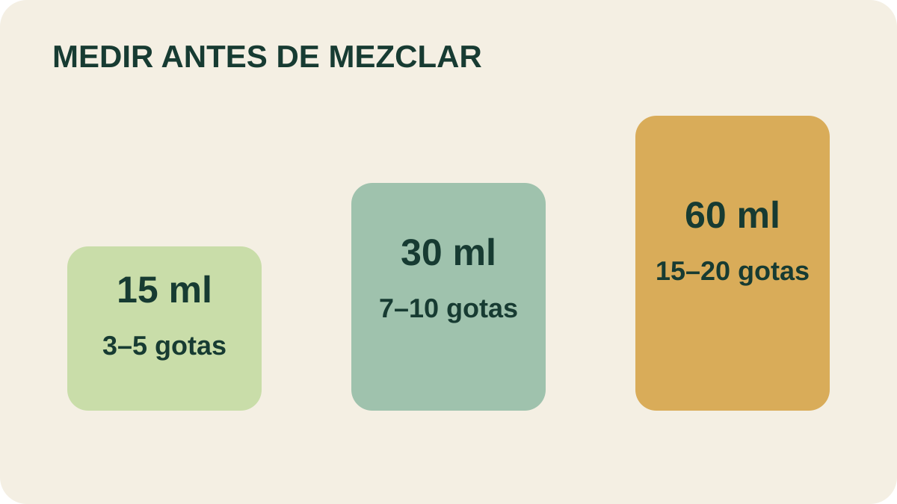

Módulo 23 · 25 minutos
Diluir bien: aceites vehiculares y proporciones
Al terminar, vas a poder elegir un aceite vehicular y calcular una proporción dentro de los rangos indicados.
La cantidad mínima que cambia todo
El aceite esencial no se aplica puro y tampoco se dispersa de manera uniforme en agua. Entre el frasco concentrado y la piel hace falta un puente: un vehículo compatible y una cantidad medida. Diluir no es quitarle valor al aroma; es convertirlo en una preparación controlable.
El vehículo no es agua
Un puede mezclarse con la esencia sin que esta pierda sus propiedades. Los obtenidos de semillas y otras partes oleaginosas se adaptan a la piel, la hidratan y sirven de base. El material también menciona leche, miel, vinagre, arcilla, sal, nata o yema de huevo para formatos específicos.
Almendras dulces se absorbe rápido y se describe como hidratante y protector. Aguacate combina bien con germen de trigo, aunque se deteriora con facilidad. Jojoba se conserva bien y puede retardar el deterioro de la mezcla. Germen de trigo suele añadirse a otros vehiculares para prolongar su conservación.
Germen de maíz es apropiado para jabones por sus ácidos grasos insaturados. Sésamo se usa solo o mezclado. Avellana tiene gran capacidad de penetración. Coco, hueso de melocotón y soja completan un repertorio con absorciones y texturas diferentes.
Tres volúmenes, un mismo rango
Para masaje, las equivalencias indicadas son:
60 ml
15 a 20 gotas de aceite esencial.
30 ml
7 a 10 gotas de aceite esencial.
15 ml
3 a 5 gotas de aceite esencial.
La debe registrarse como volumen de vehículo y número de gotas. “Unas gotas” no permite repetir una fórmula ni comprobar si respeta un rango.

Buscá la proporción
Compará 15, 30 y 60 ml. ¿Qué rango estimarías para 45 ml sin superar la relación indicada? Marcá primero el valor mínimo y después el máximo.
Cada formato cambia la cuenta
Para baño, el material fija 8 a 10 gotas como máximo, previamente diluidas en leche. Para inhalación menciona 5 a 8 gotas diluidas en vaporizador, o 3 a 5 en un recipiente con agua caliente. Para compresas y baño de pies, 3 a 5 gotas previamente diluidas.
Estas cifras no son intercambiables. La vía, el volumen y el vehículo forman parte de la fórmula. Este curso se concentra en preparaciones cosméticas y ambientales; las aplicaciones que impliquen salud requieren evaluación profesional.
La regla que ordena todo es sencilla: más cantidad no produce un mejor resultado. Los aceites esenciales son concentrados; exceder las cantidades recomendadas añade riesgo y vuelve imposible defender la fórmula como trabajo cuidadoso.
Actividad · Completar la escala
Calculá un rango proporcional para 45 ml de vehicular a partir de las equivalencias de masaje. Después diseñá registros para 15, 30 y 60 ml: nombre del vehículo, gotas mínimas, gotas máximas y fecha de preparación. No elijas todavía los aceites; eso llegará con las notas aromáticas.
La fórmula ya puede medirse
Sabemos cuánto y en qué vehículo. Falta definir qué puede afirmarse sobre la experiencia aromática. Antes de componer una mezcla, el curso necesita separar percepción, memoria y bienestar de las promesas de curación.
Guardá esta estación
Cuando puedas explicar la idea central con tus propias palabras, marcá el módulo como completado.